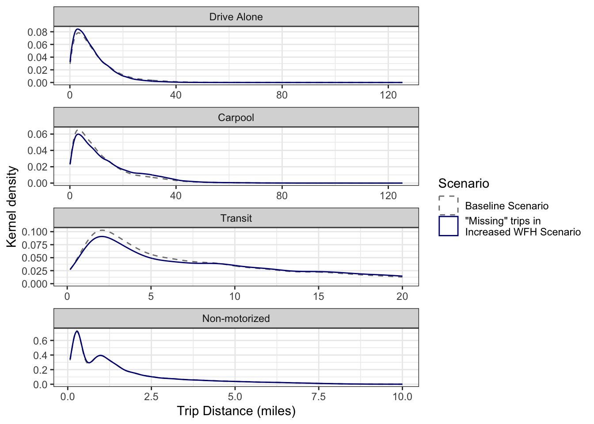

6 Scenario 3: Increase in Remote Work
With the onset of the COVID 19 pandemic, there were unprecedented numbers of people working remotely (Bick, Blandin, and Mertens 2021). Though remote work is currently not as common as during the pandemic, remote work rates are increasing each year and are predicted to continue to rise (cite?). The WFRC model predicts a year-over-year increase in remote work rates of about XXX%, as illustrated in Figure 6.1.
This scenario is a “what-if” analysis that models a significant increase in remote work rates. We use the WFRC model predicted remote work rates in the year 2050, but make no other changes from the baseline scenario. In other words, this scenario models the 2050 predicted remote work rates with the 2019 land use and infrastructure.
6.1 Considerations for Modelling Remote Work This section maybe needs to go somewhere else (probably lit review)
There has been much research, especially in recent years, on the implications of remote work. While many MPOs have adjusted their models to account for remote work, and most models follow similar principles, it is not obvious what the best method is. Bramberga (2023) even suggested that considerations for remote work should be made on a case by case basis because there is no single best approach.
Increasing remote work rates may affect several aspects of travel behavior. The most obvious effect is that people will on average make fewer work trips, and this effect will vary by job type (Yasenov 2020). Most travel demand models include a decrease in work trips based on remote work rates and job type (Bramberga 2023; Moeckel 2017; Sener and Bhat 2011).
While work trips decrease with an increase in remote work, Kim (2017) discusses a “rebound effect”, where individuals make more discretionary trips on days they do not commute to work. Moreno and Moeckel (2017) similarly proposes the existence of a “travel time budget”, where an increase in trips of one purpose will decrease the time people allocate for trips of another purpose.
This rebound effect is not straightforward, however. Elldér (2020), for example, finds that distinguishing between people that work from home all day and part of the day might make a difference. Compared to those who commute to work, the Sweden study shows that those who worked from home the whole day had less trips and miles traveled, but those who worked from home only part of the day had more trips and miles traveled.
Additionally, the types of trips people make can differ depending on remote work status. While the rebound effect proposes that the number of trips may increase on remote work days, (mokhtarian_the_1998?) finds a decrease in vehicle miles traveled for both work and discretionary trips on remote work days. This implies that longer trips are being replaced by shorter trips on days people do not travel to work. Moeckel (2017) additionally finds that those who travel to their job site less frequently are more likely to live further away from their job site, and so their longer but infrequent commute is dropped on remote work days, perhaps in favor of shorter, discretionary trips.
6.2 Scenario Creation
As noted in Section 3.3.2, both models make a distinction between “working from home” (no work location other than home) and “telecommuting” (working remotely some but not all days). The WFRC model contains a lookup table of both work-from-home (called “home-based jobs” in the WFRC model) and telecommute percentages by job type and year. Two changes are needed in the WFRC model for this scenario. The first is to replace the 2019 estimates for work-from-home and telecommuting with the 2050 estimates. Table 6.1 shows both the original and updated estimates. The second change is to the TAZ-level socioeconomic data. The WFRC model estimates a number of home-based jobs in each TAZ, and the original home-based job estimates are similarly replaced with the 2050 estimates.
The WFRC model additionally includes a global scaling factor for all remote work percentages. However, this was left unchanged (set at 1) as we considered that the 2050 predicted remote work percentages would better model a more realistic increase in remote work than simply adjusting the 2019 rates globally.
| name | 2019_tc | 2050_tc | 2019_wfh | 2050_wfh |
|---|---|---|---|---|
| Retail | 0.0270 | 0.0725 | 0.0212 | 0.0250 |
| Food | 0.0187 | 0.0503 | 0.0146 | 0.0173 |
| Manufacturing | 0.0202 | 0.0545 | 0.0159 | 0.0188 |
| Office | 0.0666 | 0.1801 | 0.0522 | 0.0623 |
| Gov't/Education | 0.0167 | 0.0456 | 0.0131 | 0.0157 |
| Health | 0.0286 | 0.0721 | 0.0211 | 0.0249 |
| Agriculture | 0.0693 | 0.1683 | 0.0544 | 0.0582 |
| Mining | 0.0053 | 0.0143 | 0.0042 | 0.0050 |
| Construction | 0.0328 | 0.0882 | 0.0257 | 0.0304 |
| Other | 0.0537 | 0.1458 | 0.0421 | 0.0504 |
We adjusted the remote work models in ActivitySim using the same process as in Section 3.3.2, but with the 2050 targets from the WFRC model. The “target work-from-home percent” value in ActivitySim’s work-from-home submodel was changed to 3.5% based on a weighted average from the 2050 WFRC data, and the job type coefficients in the telecommute frequency submodel were calibrated to match the WFRC target telecommute shares by job type. Table 6.2 shows the WFRC 2050 telecommute percentages with the ActivitySim telecommute utility coefficients. As in the baseline scenario, this calibration allowed ActivitySim to match the WFRC telecommute percentages exactly.
| Job Type | WFRC Telecommute % | 1 day | 2–3 days | 4 days |
|---|---|---|---|---|
| Retail | 7.25% | 2.021 | 0.809 | 0.505 |
| Food | 5.03% | 1.376 | 0.551 | 0.344 |
| Manufacturing | 5.45% | 1.636 | 0.655 | 0.408 |
| Office | 18.01% | 4.792 | 1.916 | 1.197 |
| Gov't/Education | 4.56% | 1.199 | 0.480 | 0.301 |
| Health | 7.21% | 1.929 | 0.771 | 0.482 |
| Agriculture | 16.83% | 4.764 | 1.906 | 1.191 |
| Mining | 1.43% | -0.694 | -0.277 | -0.174 |
| Construction | 8.82% | 2.544 | 1.018 | 0.637 |
| Other | 14.58% | 3.804 | 1.521 | 0.951 |
6.3 Scenario Analysis
Both models decrease the number of work trips made as remote work rates increase. However, the WFRC model does not account for a potential “rebound effect” where more discretionary trips are made by those who do not travel to their workplace on a given day. This is seen in Table 6.3, where the WFRC model shows a decrease in home-based work and non–home-based trips (many of which begin or end at work), but virtually no change in home-based other trips. ActivitySim on the other hand does account for this, in that individuals working remotely on any given day may be more likely to make discretionary tours. Table 6.3 shows this as well, where ActivitySim predicts a noticeable increase in home-based other trips as well as a decrease in work trips.
| purpose | mode | cube_wfh | cube_by | cube_diff_pct | asim_wfh | asim_by | asim_diff_pct |
|---|---|---|---|---|---|---|---|
| hbo | auto | 4097820.76 | 4096687.52 | 0.0002766 | 3278836 | 3253220 | 0.0078740 |
| hbo | nonmotor | 508869.39 | 510143.12 | -0.0024968 | 534807 | 532274 | 0.0047588 |
| hbo | transit | 37358.88 | 37346.03 | 0.0003440 | 67593 | 67396 | 0.0029230 |
| hbw | auto | 1483119.63 | 1586414.32 | -0.0651121 | 1430577 | 1524169 | -0.0614053 |
| hbw | nonmotor | 71062.67 | 76506.40 | -0.0711540 | 78703 | 83119 | -0.0531286 |
| hbw | transit | 44976.92 | 48751.83 | -0.0774313 | 59124 | 62814 | -0.0587449 |
| nhb | auto | 2193201.17 | 2224877.85 | -0.0142375 | 1790340 | 1839065 | -0.0264944 |
| nhb | nonmotor | 144126.37 | 146403.78 | -0.0155557 | 157632 | 162979 | -0.0328079 |
| nhb | transit | 13198.72 | 13453.28 | -0.0189221 | 29650 | 30513 | -0.0282830 |
In addition to the number of trips, increasing remote work rates can also have an effect on the length of trips that are made. The “travel time budget” proposed by Moreno and Moeckel (2017) suggests that longer trips would be made less frequently, and Moeckel (2017) additionally found that those who travel to their job site less frequently are more likely to live further away from their job site, and so their longer but infrequent commute is dropped on remote work days, perhaps in favor of shorter, discretionary trips.
The WFRC model does not consider trip length when adjusting trip rates due to remote work. There is perhaps an implicit consideration in that remote work rates differ by job type and some job types are concentrated in certain areas, but there is no reference to trip length explicitly. Table 6.4 illustrates this, where for example home-based work driving trips decreased by 6.5% relative to the baseline scenario, but person-miles traveled decreased only by 5.8%. This shows that in fact the shorter work trips are being made less frequently with increased remote work rates, though notably this is only a side-effect of the WFRC model and the two specific model scenarios.
| purpose | mode | wfh_trips | by_trips | trips_pct | wfh_pmt | by_pmt | pmt_pct |
|---|---|---|---|---|---|---|---|
| hbo | auto | 4097820.76 | 4096687.52 | 0.0002766 | 19571300.34 | 19509400.62 | 0.0031728 |
| hbo | nonmotor | 508869.39 | 510143.12 | -0.0024968 | 590348.63 | 591297.33 | -0.0016044 |
| hbo | transit | 37358.88 | 37346.03 | 0.0003440 | 264432.21 | 264203.19 | 0.0008668 |
| hbw | auto | 1483119.63 | 1586414.32 | -0.0651121 | 15015363.77 | 15941522.07 | -0.0580972 |
| hbw | nonmotor | 71062.67 | 76506.40 | -0.0711540 | 122930.22 | 132215.78 | -0.0702304 |
| hbw | transit | 44976.92 | 48751.83 | -0.0774313 | 500952.87 | 547803.97 | -0.0855253 |
| nhb | auto | 2193201.17 | 2224877.85 | -0.0142375 | 12275574.44 | 12427922.00 | -0.0122585 |
| nhb | nonmotor | 144126.37 | 146403.78 | -0.0155557 | 134783.78 | 136913.82 | -0.0155575 |
| nhb | transit | 13198.72 | 13453.28 | -0.0189221 | 72017.93 | 73563.35 | -0.0210080 |
ActivitySim does model distance to work directly when predicting remote work status (see Section 3.3.2 and Table 3.5), so those who live further away from their job site are more likely to work remotely. ActivitySim therefore predicts a greater decrease in miles traveled than in trips for home-based work, as seen in Table 6.5.
| purpose | mode | wfh_trips | by_trips | trips_pct | wfh_pmt | by_pmt | pmt_pct |
|---|---|---|---|---|---|---|---|
| hbw | auto | 1430577 | 1524169 | -0.0614053 | 13438309.2 | 14351364.3 | -0.0636215 |
| hbw | transit | 59124 | 62814 | -0.0587449 | 549977.0 | 586362.1 | -0.0620523 |
| hbw | nonmotor | 78703 | 83119 | -0.0531286 | 147536.8 | 155797.9 | -0.0530245 |
| hbo | auto | 3278836 | 3253220 | 0.0078740 | 18195390.3 | 18066304.6 | 0.0071451 |
| hbo | transit | 67593 | 67396 | 0.0029230 | 418216.8 | 418921.3 | -0.0016816 |
| hbo | nonmotor | 534807 | 532274 | 0.0047588 | 906676.3 | 901975.1 | 0.0052122 |
| nhb | auto | 1790340 | 1839065 | -0.0264944 | 8834052.0 | 9117281.9 | -0.0310652 |
| nhb | transit | 29650 | 30513 | -0.0282830 | 160402.5 | 166288.2 | -0.0353943 |
| nhb | nonmotor | 157632 | 162979 | -0.0328079 | 177833.8 | 183398.1 | -0.0303400 |
Figures 6.2 and 6.3 show the trip length frequency distribution of “unmade” trips in the increased remote work scenario (i.e. the trip length frequency distribution of the difference in trips) compared to that of the baseline scenario. Similar to Tables 6.4 and 6.5, this shows that ActivitySim “removes” longer trips more frequently than shorter trips, and the WFRC model makes no distinction.
